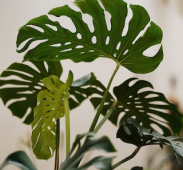
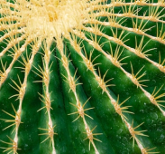
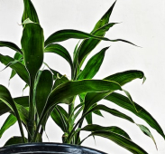

식물자랑
이번에 기르게된 다육이들! 너무 잘 자라주어서 감동...
by. 다육다육
장미는 어떤가요...>.< 마당에 있는 장미가 이쁘게 핀...
by. 장미사랑
쌍추추추 상추가 너무 잘자랐다!! 상추좀 봐주세요!!!
by. 쌍츄츄
식물자랑
2022. 10. 20
조회수 3
이번에 기르게된 몬스테라!!!!😏
드디어!!!드디어!!!!!! 기르고 싶었던 몬스테라를 기르게 되었어요ㅜㅜㅜㅜ 완전 대박적 대박적!!! 제일먼저 알려드리고 싶어서 이렇게 번개 처럼 달려 왔네요ㅜㅜ 모두들 몬스테...
by. 얍얍

식물자랑
2022. 10. 20
조회수 3
라벤더 라벤더~ 라벤더의 매력에 빠져봐용^^
오래전부터 라벤더를 기르고 있었는데 라벤더만에 매력이 있는것 같아요! 이 영롱스한 보랏빛이 너무 매력적이지 않나요?? 정말 사랑에 빠질것같은 색깔이에요ㅠㅠ! 여러분들...
by. 빽투더 라벤더식물자랑
2022. 10. 20
조회수 3
[금호선인장] 둥글둥글
선인장~선인장 신나는 노래~~~ 이번에 금호선인장을 기르게 되는 행운을 얻어서 모두와 같이 볼려고 이렇게 올려봅니다아~! 둥글둥글한게 정말 매력적인 선인장 같아요~! 선인..
by. 썬인짱

식물자랑
2022. 10. 20
조회수 3
해피해피 해피트리~
해피트리 잎이 마를때는 역시 가지치기를 해서 새로운 잎을 받는 것도 한가지 방법입니다! 키우는 환경에 따라 해피트리 잎이 노랗게 변하는 이유는 여러가지가 있는 것 같...
by. 뿌슝빠슝
